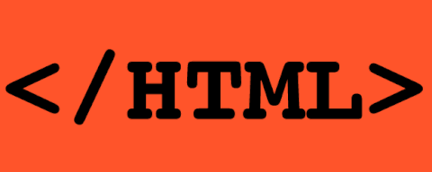

CSS (no angļu: Cascading Style Sheets) jeb Stila lapas kaskadēšana ir īpaša stila lapas valoda, ko lieto, lai aprakstītu izskatu iezīmēšanas valodā veidotiem dokumentiem. Populārākais pielietojums ir HTML un XHTML valodās veidotu tīmekļa lappušu izskata aprakstīšanai, bet to var izmantot jebkādiem XML dokumentiem, piemēram, SVG un XUL. CSS specifikācijas uztur Vispasaules tīmekļa konsorcijs (W3C).
Par dokumenta stilu šajā gadījumā saprot tā elementu īpašības, kas raksturo ārējo izskatu (krāsu, izmēru, fontu u.c.). CSS tika iecerēts, lai atdalītu dokumenta saturu no tā stila. Tas ļauj dokumenta izskatu pielāgot konkrēta lietotāja vajadzībām. Bez tam vienam dokumentam var pielietot vairākus stilus, piemēram, vienu skatīšanai uz ekrāna, otru izdrukāšanai uz papīra, citu — atskaņošanai ar balsi.
Par "kaskadētām stila lapām" šo tehnoloģiju sauc tādēļ, ka vienu stilu lapu var mantot (kaskadēt) no citas. Tādējādi uz vienu elementu var attiekties vairāki stili. Lai nerastos konflikti, CSS ir izstrādāti kaskadēšanas noteikumi, pēc kuriem jāvadās pārlūkprogrammai, attēlojot dokumentu. Šie noteikumi ir balstīti uz prioritāšu shēmu jeb kaskādi.
Zemākā prioritāte ir stiliem pēc noklusējuma. Tos nosaka pārlūkprogramma. Piešķirtiem stiliem ir augstāka prioritāte. Ja CSS failos atrodas divi pilnīgi vienādi stili tad vērā tiek ņemts pēdējais ielasītais. Tādā veidā faila sākumā var uzrakstīt vienu stilu, bet vēlāk pēc kāda notikuma to var pārrakstīt ar jaunu stila noteikumu. Stila svara pakāpe tiek aprēķināta pēc īpašas tabulas, bet pēc būtības jo vairāk elementu klases ir iekļautas selektorā, jo spēcīgāks ir stils.